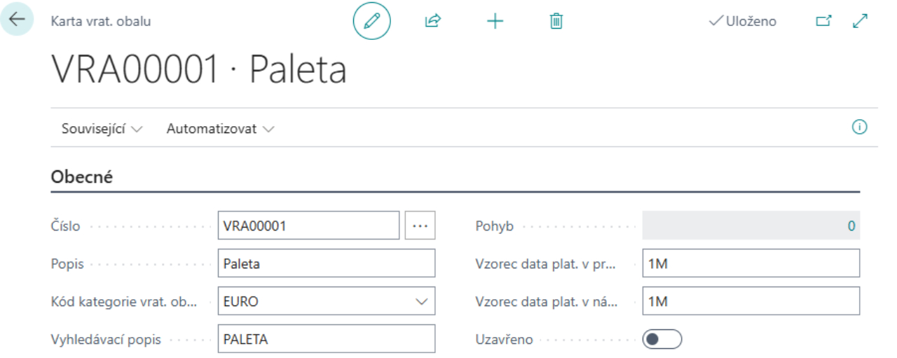

Vratné obaly
Aktualizace: 01.12.2024
V dnešní době, kdy je udržitelnost a efektivita klíčová, hrají vratné obaly zásadní roli v moderních firmách. Tyto obaly, navržené pro opakované použití, nejenže snižují náklady na jednorázové obaly, ale také minimalizují ekologickou stopu. Firmy je využívají pro přepravu a skladování zboží, čímž zajišťují bezpečnost a ochranu produktů během celého logistického procesu. Typické vratné obaly zahrnují palety, přepravky, sudy, lahve používané pro nápoje, kontejnery a opakovaně použitelné krabice. Každý z těchto obalů má své specifické využití – od přepravy těžkých materiálů na paletách až po skladování kapalin v sudech a nápojů v lahvích. Firmy sledují pohyb těchto obalů pomocí moderních informačních systémů, které zajišťují efektivní evidenci, údržbu a optimalizaci procesů, což vede k výrazným úsporám a zvýšení celkové efektivity.

Nový standard v efektivitě obalového hospodářství
Modul Vratné obaly v systému Dynamics 365 Business Central je vaším klíčem k dokonalé kontrole nad obalovým hospodářstvím. Tento modul umožní optimalizovat oběh vratných obalů a přinést do vaší společnosti přehlednost a úspory. Ať už sledujete salda obchodních partnerů, spravujete nákupní a prodejní transakce, nebo potřebujete detailní reporting.
Dejte sbohem zbytečnému chaosu ve skladovém hospodářství a využijte systém, který šetří váš čas, peníze i životní prostředí. Přesvědčte se sami, jak jednoduše lze zvládnout komplexní evidenci vratných obalů a vytvořit udržitelnější budoucnost.
Klíčové Funkce Modulu Vratných Obalů
- Samostatná evidence Vratných obalů: Naše řešení umožňuje detailní evidenci vratných obalů, včetně čísla, popisu, kategorie a dalších důležitých údajů. Tím zajišťujeme, že každý obal je vždy pod kontrolou.
- Integrace se zásobami: V rámci standardní funkcionality zásob lze ke kartám zboží přiřadit odpovídající vratný obal. Například pro paletu lze vytvořit kartu zboží “Paleta” a na ni přiřadit kartu vratného obalu “Paleta”. Tento systém zajišťuje hladkou integraci a snadné sledování obalů při každém pohybu zboží.
- Automatizace na dokladech: Na nákupních a prodejních dokladech lze vkládat karty zboží s přiřazenými vratnými obaly. Při účtování dokladů vznikají položky vratných dokladů, které slouží ke sledování příjmů a výdejů vratných obalů. Tento proces umožňuje efektivní sledování obalového salda dodavatele nebo odběratele.
- Deník vratných obalů: Pro ruční pohyby vratných obalů slouží Deník vratných obalů, kde lze realizovat ruční příjem a výdej obalů, nastavit počáteční stavy nebo provést korekci dle skutečného stavu. Tento nástroj poskytuje flexibilitu a přesnost při správě obalů.


Scénáře použití Vratných obalů
Abychom vám usnadnili práci, přinášíme přehled nejčastějších scénářů, se kterými se můžete v běžné praxi setkat:
- Zavedení nového obalu
- Nastavení počátečního množství obalu
- Nákup zboží zahrnující vratné obaly
- Prodej zboží zahrnující vratné obaly
- Reporty
Zavedení nového obalu
- Vyberte ikonu
 , zadejte Přehled vrat. Obalů a poté vyberte související odkaz.
, zadejte Přehled vrat. Obalů a poté vyberte související odkaz. - Na stránce Přehled vrat. Obalů vyberte akci Nový.

- Po vybrání akce Nový se otevře Karta vrat. obalu.
Každá Karta vratného obalu obsahuje tato pole:
- Číslo – zvolte číselnou řadu vratných obalů
- Popis – název vratného obalu
- Kód kategorie vrat. obalu – identifikace kategorie vratného obalu
- Vyhledávací popis
- Pohyb – needitovatelné pole s odkazem do tabulky „Položky vrat. Obalu“. Zde zobrazená hodnota udává stav salda vratných obalů
- Vzorec data platnosti v prodeji – zadejte dobu, do kdy má zákazník povinnost vratný obal vrátit
- Vzorec data platnosti v nákupu – zadejte dobu, do kdy máte povinnost vratný obal vrátit dodavateli
- Uzavřeno – pole pro uzavření(zamezení) dalšího použití dané karty vratného obalu
Nastavené hodnoty mají v případě, že jsou vyplněny, přednost před obecným nastavením.
Z karty je dále možnost s pomocí akce Související zobrazit Položky vrat. Obalu a Poznámky.
Jelikož každý Vratný obal je zbožím, je také nutno vytvořit kartu zboží daného vratného obalu a přiřadit jí číslo Vratného obalu. Volba „dvojité“ evidence je z důvodu oddělení sledování expirace vratných obalů od účetních operací.
- Vyberte ikonu , zadejte Zboží a poté vyberte související odkaz.
- Na stránce Zboží vyberte akci Nový.
- Jestliže máte nastavené Šablony zboží, objeví se tabulka Vybrat šablonu pro nové zboží, kde vyberete možnost Zboží.
- Otevře se Karta zboží. Zde zadáte informace o vratném obalu a přiřadíte Číslo vrat. obalu.
Nastavení počátečního množství obalu
Pro nastavení počátečních stavů salda obalů využijeme deníky vratných obalů, které slouží dále také k provádění oprav a korekcí.
- Vyberte ikonu , zadejte Deník vratných obalů a poté vyberte související odkaz.
- Na stránce Deník vratných obalů vyplňte následující pole.

Deník vratných obalů obsahuje tyto pole:
- Typ položky – vyberte, zda se jedná o Nákup, Prodej, Příjem, Výdej
- Číslo dokladu – vyplňte číslo dokladu
- Číslo vratného obalu – vyberte číslo související karty vratného obalu
- Číslo zboží – vyberte číslo souvisejícího karty zboží
- Typ původu – needitovatelné pole vyplněné automaticky na základě pole Typ položky
- Číslo původu – vyberte číslo konkrétního dodavatele
- Popis – název vratného obalu
- Množství – zadejte počet kusů vratného obalu
- Vyrovnává položku – vyberte položku k vyrovnání
- Po vyplnění požadovaných polí vyberte akci Tisk, kde můžete zkontrolovat správnost vyplnění.
- Na základě preferencí vyberte akci Účto, nebo Účto a tisk.
Warning
Při použití volby Oprava v deníku vratných obalů není při účtování prováděno párování položek dle nastavených kritérií.
Nákup zboží zahrnující vratné obaly
Při nákupu zboží obsahující vratné obaly je nutné zajistit, aby tyto obaly byly správně evidovány v systému. Vratné obaly jsou často používány pro přepravu zboží, a proto je důležité je uvést na nákupní objednávce, aby bylo možné sledovat jejich stav a salda.
Scénář
Oddělení nákupu se na základě zvýšené poptávky rozhodlo objednat nové zboží od dodavatele Wide World Importers. Nákupní objednávka zahrnuje 5x Stůl ATÉNY (1896-S) a 20x Křeslo PAŘÍŽ, černé (1900-S). Na základě informací od dodavatele víme, že zboží dorazí na 6 paletách, které budou evidovány jako vratné obaly. Správná evidence těchto obalů umožní jejich efektivní správu a sledování salda.
Řešení
- Vytvoříme novou nákupní objednávku
- Vyplníme detaily dodavatele na záložce Obecné
- Na řádcích objednávky vybereme požadované zboží a množství
- Navíc ručně přidáme zboží vytvořené pro vratný obal

Important
Pro správné fungování je nutné, aby byla karta zboží propojena s kartou vratného obalu viz. Zavedení nového obalu.
Prodej zboží zahrnující vratné obaly
Při prodeji zboží obsahujícího vratné obaly je nutné zajistit, aby tyto obaly byly správně evidovány v systému. Vratné obaly jsou často využívány k přepravě prodaného zboží, a proto je důležité je uvést na prodejní objednávce. To umožní přesné sledování jejich stavu a salda.
Scénář
Zákazník si objednal 1x Stůl ATÉNY (1896-S) a 4x Křeslo PAŘÍŽ, černé (1900-S). Pro splnění této objednávky je nutné vytvořit prodejní objednávku, do které kromě samotného zboží přidáme také položku vratného obalu – paletu, na které bude zboží přepraveno.
Řešení
- Vytvoříme novou prodejní objednávku
- Vyplníme informace o zákazníkovi na záložce Obecné
- Na řádcích objednávky vyplníme objednané zboží a množství
- Navíc ručně přidáme zboží vytvořené pro vratný obal

Important
Pro správné fungování je nutné, aby byla karta zboží propojena s kartou vratného obalu viz. Zavedení nového obalu.
Reporting
Pro efektivní správu vratných obalů máte k dispozici různé reporty, které naleznete na příslušných kartách modulu. Tyto reporty vám umožní získat přehled o pohybech, saldu a dalších detailech vratných obalů.
- Vyberte ikonu , zadejte požadovaný report a poté vyberte související odkaz na tiskovou sestavu.
Podklad pro výkaz obalů: Slouží k přípravě podkladů pro výkaznictví.
Účtování vratných obalů – test: Umožňuje otestovat správnost účtování vratných obalů.
Žurnály vrat. obalů: Při každém účtování položky vratného obalu je vytvořen záznam v Žurnálu vratného obalu (obdoba Žurnálu zboží)

Žurnál vratných obalů – množství: Nabízí detail množstevních pohybů jednotlivých žurnálů vratných obalů.
- Na řádku číslo zvolíme konkrétní žurnál, u kterého chceme znát detail

- Na řádku číslo zvolíme konkrétní žurnál, u kterého chceme znát detail
Jestliže necháme řádek prázdný, sestava vytiskne detail všech žurnálů viz. Foto níže

- Detailní pohyby vratných obalů: Poskytuje detailní historii všech pohybů vratných obalů.
- Přesun vratných obalů: Přehled přesunů vratných obalů mezi sklady či zákazníky.
- Saldo vratných obalů zákazníka: Ukazuje aktuální stav salda vratných obalů u jednotlivých zákazníků.
- Je třeba zadat číslo zákazníka a období (datum), pro které chceme zjistit stav salda
- Sestavu můžeme spustit za Zákazníka nebo za Plátce


- Saldo vratných obalů dodavatele: Zobrazuje stav salda vratných obalů u vašich dodavatelů.
- Je třeba zadat číslo dodavatele a období (datum) pro které chceme zjistit stav salda
- Sestavu můžeme spustit za Dodavatele nebo za Věřitele


Viz také
Nastavení - Evidence vratných obalů (Vratné obaly)
Financial Pack